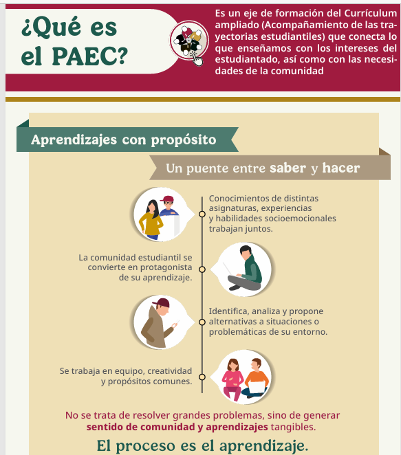

Proceso del Programa PAEC
Conoce los pasos para participar en el programa y comenzar tu servicio social en alguna de nuestras áreas de acción.
¿Qué es el PAEC?
El Programa Aula Escuela Comunidad es un eje de formación del Currículum ampliado (Acompañamiento de las trayectorias estudiantiles) que conecta lo que enseñamos con los intereses del estudiantado, así como con las necesidades de la comunidad.
🎯 Aprendizajes con Propósito
Un puente entre saber y hacer
- Conocimientos de distintas asignaturas, experiencias y habilidades socioemocionales trabajan juntos
- La comunidad estudiantil se convierte en protagonista de su aprendizaje
- Identifica, analiza y propone alternativas a situaciones de su entorno
- Se trabaja en equipo, creatividad y propósitos comunes
💡 Filosofía
"No se trata de resolver grandes problemas, sino de generar sentido de comunidad y aprendizajes tangibles. El proceso es el aprendizaje."

Pasos para Participar
Sigue estos pasos para comenzar tu servicio social en el PAEC
Elegibilidad Académica
El primer paso es cumplir con los créditos académicos necesarios (generalmente entre 50-60% de avance). Esto asegura que tengas los conocimientos básicos para aprovechar al máximo tu experiencia.
Capacitación Inicial
El Departamento de Vinculación te dará un curso de inducción donde conocerás los formatos oficiales, las fechas importantes y todo lo que necesitas saber para comenzar.
Selección de Área
Tú eliges dónde participar. Revisa las diferentes áreas disponibles y selecciona la que más te interese. Cada área tiene un responsable que te guiará durante todo el proceso.
Vinculación Oficial
Una vez que elijas tu área, se formaliza tu participación con una Carta de Presentación. El responsable del área te dará una Carta de Aceptación para completar tu expediente.
Informe Final con Evidencias
Al completar tus actividades (mínimo 80 horas), entregarás un informe final con las evidencias de tu participación. Una vez aprobado, recibirás tu Constancia de Liberación.